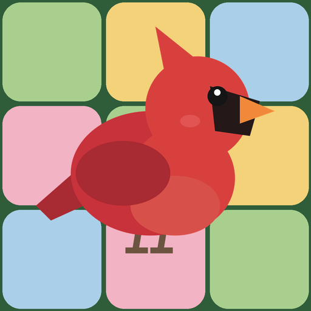

Birdsong Logic
one bird in every patch · no timer · no rush
A calm logic puzzle with real birds. Place one bird in every row, every column and every colour patch, and never let
two birds touch. Each bird sings its song as it lands, and finishing meadows fills your field journal with real species.
- Every puzzle has exactly one answer and can be solved by thinking, never guessing
- Song clues: a fresh twist that counts the birds around a square
- "Why?" hints that explain the next step in plain words
- 15 birds to spot, each with its song and a fact; a daily puzzle and endless meadows
- No timer, never an ad in the middle of a puzzle, and it plays offline
Privacy policy · Delete your data · gamesndroid6@gmail.com